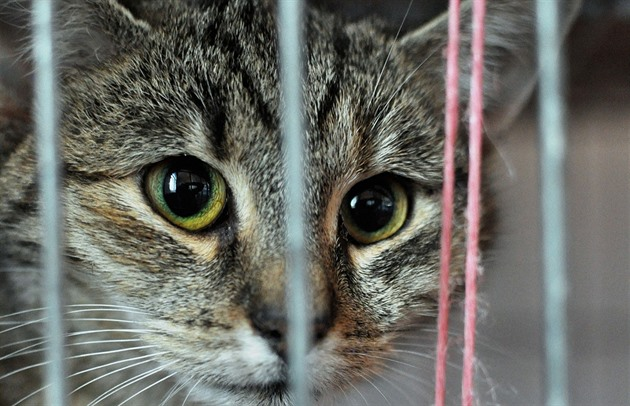

Vítejte v útulku MňauDomov
Vítejte na stránkách našeho kočičího útulku MňauDomov. Naším cílem je pomáhat opuštěným kočkám najít nový domov a zajistit jim bezpečí, lásku a péči. Každá kočka u nás má svůj vlastní příběh a čeká na někoho, kdo jí porozumí. Na webu najdete informace o našich kočkách, o životě v útulku a o možnostech, jak můžete pomoci. Doufáme, že se vám náš web bude líbit a že najdete svou novou kamarádku nebo kamaráda. Naše kočky jsou různé – malé, velké, hravé, mazlivé nebo trochu stydlivé, ale všechny jsou milované. Chceme lidem ukázat, že každé zvíře si zaslouží šanci na nový domov a že adopce je skvělý způsob, jak pomoci.
Náš útulek vznikl před několika lety díky lidem, kteří chtěli pomáhat zvířatům v nouzi. Každý den se staráme o zdraví, stravu a pohodlí koček, učíme návštěvníky, jak se správně starat o kočku a jak jí poskytnout lásku. Rádi vítáme dobrovolníky, kteří chtějí přispět svou prací a časem. Organizujeme různé akce pro veřejnost, abychom šířili povědomí o zodpovědném chovu zvířat. Naše kočky se často účastní akcí a děti i dospělí je milují. Každý, kdo přijde, nám pomáhá zlepšit život opuštěných koček a dát jim šanci na nový domov.
Na stránkách najdete také fotografie našich koček, informace o akcích a událostech, které pořádáme pro veřejnost. Můžete se seznámit s jednotlivými kočkami a přečíst si jejich příběhy. Každá návštěva útulku je vítaná a pomáhá našim zvířatům cítit se bezpečně a milovaně. Snažíme se ukázat, že adopce z útulku je skvělá volba a může změnit život nejen kočce, ale i lidem. Věříme, že každý návštěvník najde inspiraci a možná i nového čtyřnohého přítele.
Naše stránky jsou také místem, kde se můžete dozvědět, jak správně pečovat o kočku a jak jí poskytnout zdravé a šťastné prostředí. Najdete zde tipy na krmení, péči o srst, hygienu i hry, které kočky milují. Chceme vzdělávat veřejnost a podporovat zodpovědné chování k domácím zvířatům. Každý, kdo se rozhodne adoptovat kočku, se stává součástí naší komunity. Společně můžeme zajistit, aby každá opuštěná kočka dostala druhou šanci.